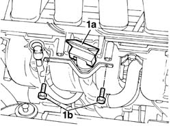
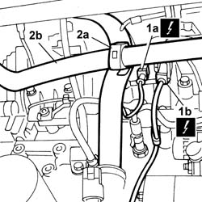
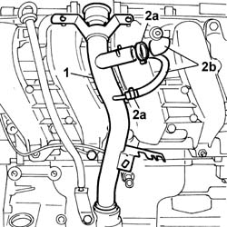
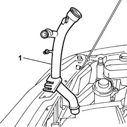

1084A22 engine oil filler - r r
- Path
- Procedures > 10 ENGINE > 1084 ENGINE LUBRICATION > 1084A indicators/check devices > 1084A22 engine oil filler - r r
- Kind
- repair procedure (removal / refitting; the operation number is the code)
- Applies to
- all engines; all production periods
- Interactive page
- https://sloeber94.github.io/elrnDB-fDbl/en/#/2584371
Applies to: all engines; all production periods
 Removing
Removing
 Refitting
RefittingPlace the car on a lift.
1048A32 sleeve from air cleaner to intake manifold - r + r
1. Remove the cap (1a), undo the bolts (1b) securing the oil filler pipe to the cylinder head.

Applies to: all engines; all production periods
7055B54 under-engine guard - r r
1. Remove the timing sensor electrical connection (1a) and rpm sensor electrical connection (1b) from the mounting bracket on the oil filler pipe.
 | Name | Connector |
|---|---|---|
1a | Timing sensor | K47 |
| Name | Connector |
|---|---|---|
1b | RPM sensor | K46 |
2. Open the band (2a) and release it from the rigid pipe. Release the cooling system pipe (2b).

Applies to: all engines; all production periods
1. Withdraw the oil filler pipe from the engine block.
2. Open the bands (2a) and disconnect the oil vapour recovery pipes (2b), then lower the car.

Applies to: all engines; all production periods
1. Withdraw upwards the engine oil filler pipe and remove it from the engine compartment.

Applies to: all engines; all production periods
Refitting
RemovingReplace the lower fitting seal.
Fit the oil filler pipe in the engine compartment and connect the oil vapour recovery pipes.
Place the plastic band on the pipe then secure the cooling system pipe to it.
Fit the electrical connections on the mounting bracket on the oil filler pipe.
| Name | Connector |
|---|---|---|
- | Timing sensor | K47 |
| Name | Connector |
|---|---|---|
- | RPM sensor | K46 |
7055B54 under-engine guard - r r
Tighten the bolts securing the oil filler pipe on the cylinder head.
Fit the cap.
1048A32 sleeve from air cleaner to intake manifold - r + r
Remove the vehicle from the lift.
Topics linked from this page (2)
Topics that link to this page (9)
- 1016B20 lh cylinder head extension - replace gasket
- 1016B22 lh cylinder head extension - r r with timing belt removed - replace gasket
- 1016B24 rh cylinder head extension - replace gasket
- 1036G10 camshaft controlling exhaust valves in top head - r + r with top head removed - includes replacement of top head
- 1036G20 camshaft controlling intake valves in top head - r + r with top head removed - includes replacement of top head if necessary
- 1056B60 single fuel manifold pipe, with injectors - r + r
- 1056B61 single fuel manifold with injectors - r+r with air conveyor/box removed
- 1072B10 inlet manifold - r + r and replace seal
- 1072B14 inlet manifold - r+r and replace seal with air conveyor/box removed